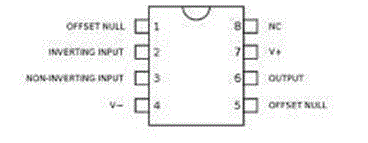

Op-amp or operational amplifier is primarily a voltage amplifier. Basic structure of op-amp has two inputs and one output and the input is a differential one. The output voltage produced by the op-amp is much more than (amplified) than the difference of the input terminal values. Op-amp is an integrated circuit which we called as IC and it is extensively used in different circuit. It is mostly used in variety of electronic circuits and devices. Op-amps are provided with many characteristics- voltage, current, impedance, temperature, etc. Most common and basic op-amp is op-amp 741. It has total eight (8) pins. The input may be inverting and non- inverting and it has only one output. There is one pin which is blank, not connected to anything. The pin diagram of op-amp 741 is shown below.

Three pins are most important that is pin 2, 3 and 6. Pin 8 is not connected to anything. Pin 6 is the output pin and op-amp may be inverting if input is applied to pins. Else it is non-inverting if input voltage applied to pin no. 3. Like all other op-amps op-amp 741 has input stage, operation and output stage. Op-amp 741 has both negative and positive feedback applications. This type of op-amp is used in filters, integrators or differentiators, rectifiers, DAC, ADC, Clamper circuit, oscillators and other circuits. Speed-gain performance of this model of op-amp is quite low, as compared with other modern models of Opamp. But the most desirable quality in electronics applications is the noise free operation, because little oscillations affect the performance of a circuit when the signal is amplified. Op-amp 741 does not produce unwanted oscillations as because its frequency response can be controlled.
 by
by